Ranking Review
Quiksilver alias cleanup comes before ranking movement.
Quiksilver added useful evidence, but some source names needed WPI identity review before rankings could move responsibly.

Names like LB Viking, SD Shores, CIU, La Jolla Gold, OVAC, and 680 require canonical mapping so WPI does not split one team into multiple records or merge teams that should stay separate.
The 7.29 cleanup created a review file for those mappings and held review-sensitive items out of major ranking movement until they could be checked.